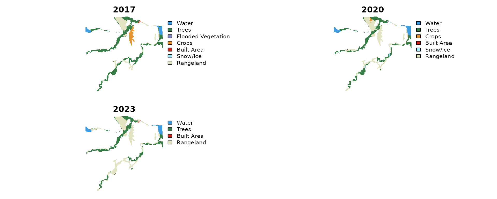
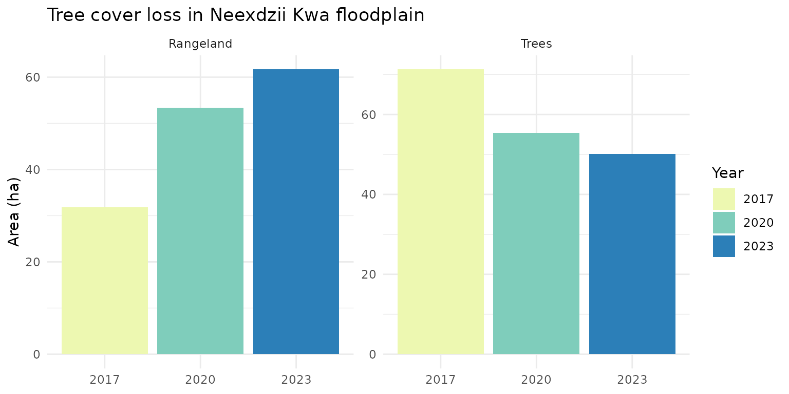

This vignette demonstrates the drift pipeline using a small floodplain reach on Neexdzii Kwa (Upper Bulkley River) in northern BC. We compare Esri IO LULC land cover across 2017, 2020, and 2023 to track vegetation and land use change in the riparian zone.
The example data ships with the package — no STAC queries or database connections needed.
Load Data
library(drift)
library(terra)
#> terra 1.8.93
library(sf)
#> Linking to GEOS 3.12.1, GDAL 3.8.4, PROJ 9.4.0; sf_use_s2() is TRUE
# AOI polygon (floodplain delineated via flooded package)
aoi <- sf::st_read(
system.file("extdata", "example_aoi.gpkg", package = "drift"),
quiet = TRUE
)
# IO LULC rasters for 3 years
years <- c(2017, 2020, 2023)
rasters <- lapply(years, function(yr) {
terra::rast(system.file("extdata", paste0("example_", yr, ".tif"),
package = "drift"))
})
names(rasters) <- yearsClassify
Apply IO LULC class names and colors from the shipped class table.
classified <- dft_rast_classify(rasters, source = "io-lulc")
# Check factor levels
terra::levels(classified[["2020"]])[[1]]
#> id class_name
#> 1 1 Water
#> 2 2 Trees
#> 3 5 Crops
#> 4 7 Built Area
#> 5 9 Snow/Ice
#> 6 11 RangelandPlot Classified Rasters
# Stack into a single multi-layer SpatRaster for panel plot
stacked <- terra::rast(classified)
names(stacked) <- names(classified)
terra::plot(stacked, axes = FALSE, mar = c(1, 1, 2, 1))
Summarize
Compute area by class for each year.
summary_tbl <- dft_rast_summarize(classified, source = "io-lulc", unit = "ha")
summary_tbl
#> # A tibble: 17 × 7
#> year code class_name color n_cells area pct
#> <chr> <int> <chr> <chr> <int> <dbl> <dbl>
#> 1 2017 1 Water #419bdf 941 9.41 7.64
#> 2 2017 2 Trees #397d49 7127 71.3 57.9
#> 3 2017 4 Flooded Vegetation #7a87c6 2 0.02 0.02
#> 4 2017 5 Crops #e49635 998 9.98 8.11
#> 5 2017 7 Built Area #c4281b 55 0.55 0.45
#> 6 2017 9 Snow/Ice #a8ebff 2 0.02 0.02
#> 7 2017 11 Rangeland #e3e2c3 3186 31.9 25.9
#> 8 2020 1 Water #419bdf 1089 10.9 8.85
#> 9 2020 2 Trees #397d49 5542 55.4 45.0
#> 10 2020 5 Crops #e49635 147 1.47 1.19
#> 11 2020 7 Built Area #c4281b 10 0.1 0.08
#> 12 2020 9 Snow/Ice #a8ebff 185 1.85 1.5
#> 13 2020 11 Rangeland #e3e2c3 5338 53.4 43.4
#> 14 2023 1 Water #419bdf 1111 11.1 9.02
#> 15 2023 2 Trees #397d49 5007 50.1 40.7
#> 16 2023 7 Built Area #c4281b 26 0.26 0.21
#> 17 2023 11 Rangeland #e3e2c3 6167 61.7 50.1Area Change Table
library(dplyr)
#>
#> Attaching package: 'dplyr'
#> The following objects are masked from 'package:terra':
#>
#> intersect, union
#> The following objects are masked from 'package:stats':
#>
#> filter, lag
#> The following objects are masked from 'package:base':
#>
#> intersect, setdiff, setequal, union
library(tidyr)
#>
#> Attaching package: 'tidyr'
#> The following object is masked from 'package:terra':
#>
#> extract
change <- summary_tbl |>
dplyr::select(year, class_name, area) |>
tidyr::pivot_wider(names_from = year, values_from = area, values_fill = list(area = 0)) |>
dplyr::mutate(
change = `2023` - `2017`,
pct_change = round(change / `2017` * 100, 1)
) |>
dplyr::arrange(dplyr::desc(abs(change)))
knitr::kable(change, digits = 2, caption = "Land cover change 2017–2023 (ha)")| class_name | 2017 | 2020 | 2023 | change | pct_change |
|---|---|---|---|---|---|
| Rangeland | 31.86 | 53.38 | 61.67 | 29.81 | 93.6 |
| Trees | 71.27 | 55.42 | 50.07 | -21.20 | -29.7 |
| Crops | 9.98 | 1.47 | 0.00 | -9.98 | -100.0 |
| Water | 9.41 | 10.89 | 11.11 | 1.70 | 18.1 |
| Built Area | 0.55 | 0.10 | 0.26 | -0.29 | -52.7 |
| Flooded Vegetation | 0.02 | 0.00 | 0.00 | -0.02 | -100.0 |
| Snow/Ice | 0.02 | 1.85 | 0.00 | -0.02 | -100.0 |
Trees vs Rangeland
The key signal in this floodplain is the shift from Trees to Rangeland over time.
trees_range <- summary_tbl |>
dplyr::filter(class_name %in% c("Trees", "Rangeland")) |>
dplyr::select(year, class_name, area, pct)
knitr::kable(trees_range, digits = 2,
caption = "Trees and Rangeland area by year (ha)")| year | class_name | area | pct |
|---|---|---|---|
| 2017 | Trees | 71.27 | 57.89 |
| 2017 | Rangeland | 31.86 | 25.88 |
| 2020 | Trees | 55.42 | 45.02 |
| 2020 | Rangeland | 53.38 | 43.36 |
| 2023 | Trees | 50.07 | 40.67 |
| 2023 | Rangeland | 61.67 | 50.09 |
library(ggplot2)
trees_range |>
ggplot(aes(x = year, y = area, fill = year)) +
geom_col() +
facet_wrap(~class_name, scales = "free_y") +
scale_fill_brewer(palette = "YlGnBu") +
labs(y = "Area (ha)", x = NULL, fill = "Year",
title = "Tree cover loss in Neexdzii Kwa floodplain") +
theme_minimal()